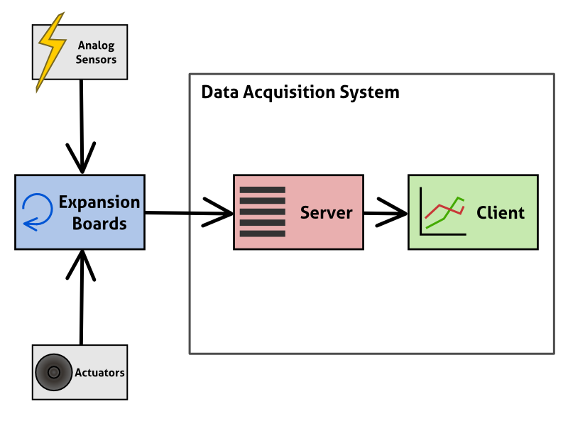
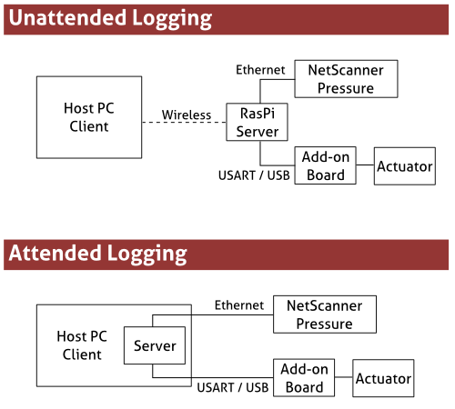

Getting started
System layout
The Blitz DAQ system is structured into several different components which all make up the flexible data logging system. These are described in the image below:

- Expansion boards provide low level access and control of sensors and actuators. These are typically based on Arduino software and described in more detail here.
- The server controls expansion boards, sampling data from them and saving it so that it can be viewed and accessed by the user. It is described in more detail here.
- The client is the software that the user has to interact with the server, either viewing data, starting and stopping acquisition or performing other key tasks. It is described in more detail here.
The Blitz DAQ can be configured in a number of ways depending on the desired logging behaviour as shown below. (This configuration is shown using an external sensor known as a "NetScanner" device)

The two configurations are
- An attended configuration, where both the server and client are run on a computer
- An unattended configuration, where the client and server are on different devices (and the server may be on something like a Raspberry Pi)
Further Instructions
The following guides are available to help you get up and running using blitz
- Requirements
- Modes of data acquisition:
- Attended
- Unattended
- Installation
- Running